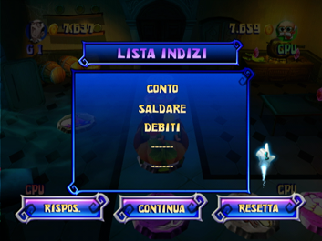
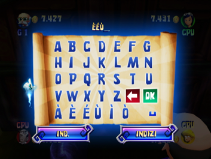

12 |
Indizi, Pergamene e la Corsa finale |
 |
Compra una Pergamena magica Ogni volta che la macchina passa sopra una casella Pergamena, potrai scegliere se comprare o meno una pergamena magica. Se decidi di comprarla, avrai accesso a un indizio per indovinare la parola segreta; se invece non la compri, vedrai in quale area è stata spostata la pergamena e la macchina continuerà a muoversi sul tabellone. Ogni pergamena che compri sarà più cara della precedente: Modalità Facile
Modalità Normale
Modalità Difficile
Schermata "Nuovo indizio" Puoi accedere a questa schermata solo dopo aver comprato almeno una pergamena. Schermata "Lista indizi"  Questa schermata segue quella “Nuovo indizio”. Qui puoi vedere tutti gli indizi raccolti fino a quel momento e provare a indovinare la parola segreta, continuare a esplorare il castello o resettare l’indovinello e continuare l’avventura. Resettare l’indovinello ti costerà 200 monete, ma fai attenzione: se non hai abbastanza monete non potrai resettare l’indovinello. Dovrai provare a indovinare la parola segreta o continuare a giocare e raccogliere altre monete!! Schermata "Indovina la parola segreta"  Se scegli l’opzione "Rispos." dalla schermata “Lista indizi”, accederai alla schermata “Indovina la parola segreta” dove potrai scegliere se provare a indovinare la parola segreta o ritornare al tabellone e continuare a giocare. Scegli "Indizi" per rivedere la lista degli indizi. Schermata "Parola segreta incorretta" Se inserisci una parola segreta sbagliata, ti verrà mostrata l’area nella quale troverai la prossima pergamena e inoltre perderai 200 monete. Se invece hai già raccolto tutti e cinque gli indizi, dovrai decidere se provare a inserire un’altra parola segreta o se resettare l’indovinello e perdere altre 200 monete. Schermata "Complimenti" Se inserisci la parola segreta corretta, apparirà la schermata di congratulazioni. Ma attenzione, non è ancora finita! Preparati per l’ultimo mini gioco. Corsa finale Dopo esserti impossessato del tesoro di famiglia di Fazzy, dovrai affrontare un ultimo mini gioco: “la Corsa finale”. Il gameplay è simile al mini gioco “Corri! Corri!” (per maggiori dettagli vedi la relativa sezione nella modalità Mini giochi): tieni il telecomando Wii in posizione orizzontale e premi il pulsante 2 per eseguire un “attacco rotante”. Tra i due mini giochi ci sono delle importanti differenze come ad esempio la mappa del labirinto. Inoltre nel mini gioco “Corsa finale”: 1) se un giocatore viene acchiappato da un fantasma, perderà un po’ di monete, ma non sarà eliminato; 2) i cavalieri nemici cercheranno di colpire i giocatori per fargli perdere qualche moneta; 3) il punteggio di partenza di questo mini gioco sarà formato dal numero di monete accumulate dai giocatori fino a quel momento. |
 |
 |
 |